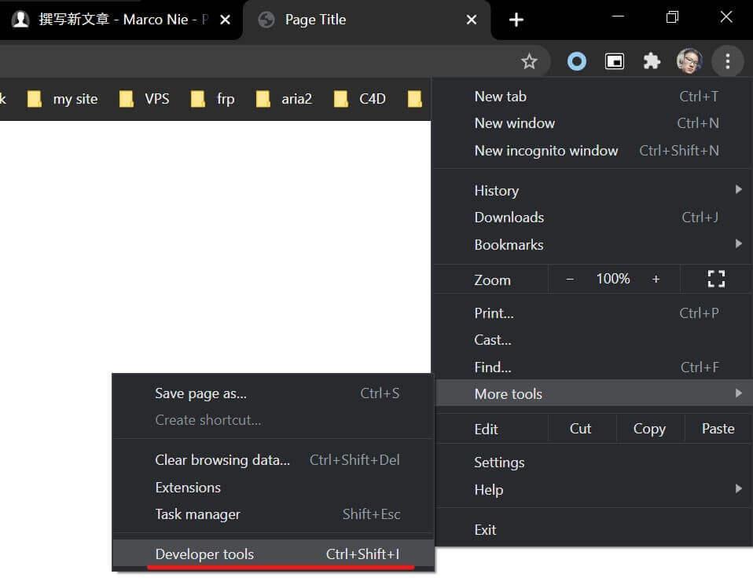

这篇文章上次修改于 515 天前，可能其部分内容已经发生变化，如有疑问可询问作者。
JavaScript（通常缩写为JS）是一种高级的、解释型的编程语言。JavaScript是一门基于原型、函数先行的语言，是一门多范式的语言，它支持面向对象程序设计，命令式编程，以及函数式编程。最初命名为 Mocha，1995年9月在 Netscape Navigator 2.0 的 Beta 版中改名为 LiveScript，同年12月，Netscape Navigator 2.0 Beta 3 中部署时被重命名为 JavaScript，当时网景公司与昇阳电脑公司组成的开发联盟为了让这门语言搭上 Java 这个编程语言“热词”，因此将其临时改名为 JavaScript，日后这成为大众对这门语言有诸多误解的原因之一。
不同于服务器端脚本语言，例如 PHP 与 ASP，JavaScript 主要被作为客户端脚本语言在用户的浏览器上运行，不需要服务器的支持。所以在早期程序员比较青睐于 JavaScript 以减少对服务器的负担，而与此同时也带来另一个问题：安全性。而随着服务器变得强大，现在的程序员更喜欢运行于服务端的脚本以保证安全，但 JavaScript 仍然以其跨平台、容易上手等优势大行其道。同时，有些特殊功能（如AJAX）必须依赖 JavaScript 在客户端进行支持。随着引擎如 V8 和框架如 Node.js 的发展，及其事件驱动及异步 IO 等特性，JavaScript 逐渐被用来编写服务器端程序。且在近几年中，Node.js 的出世，让 JavaScript 也具有了一定的服务器功能。
我们的第一个 JavaScript
我们首先来了解一些基本概念，给 web 网页加上 JavaScript。
在 web 上，JavaScript 位于 HTML document 内，可以在任意位置。js 内容使用 <script> 和 </script> 包围起来：
<script>
...
</script>让我们使用 JavaScript 在网页上打印出一个 Hello World，新建一个 html 文件，内容如下：
<!DOCTYPE html>
<html>
<head>
<title>Page Title</title>
</head>
<body>
</body>
<script>
document.write("hello world");
</script>
</html>使用 document.write() function 用来给 html document 写入内容。注意此 function 只用来测试，实际使用中会覆盖 document 中已有的内容。
JavaScript 每条指令结尾使用分号; 来标记。
文件保存后可以使用浏览器打开查看效果。
js 中还支持标准 html markup 标记语法，我们给 hello world 设置属性：
<script>
document.write("<h1>hello world</h1>");
</script>这时候文字会以标题模式显示。
也可以在浏览器终端 console 中输出信息，使用 console.log() function 实现：
<script>
document.write("<h1>hello world</h1>");
console.log("this is a test log");
</script>打开浏览器的调试窗口即可看到输出信息，chrome 浏览器使用快捷键 ctrl+shift+I 或设置中打开调试：

点击 console 栏查看：
注释
对于不需要被执行的语句可以使用符号来忽略，使用双斜杠 // 注释单行内容，使用 /* 和 */ 注释一个块。
修改我们上面的 html 文件的 js 块：
<script>
// this is a commit
document.write("<h1>hello world</h1>");
console.log("this is a test log");
/* this code create
a alert box
*/
alert("this is a alert box");
</script>alert() function 用来弹出一个提示窗口。
变量
variables 变量是存储数据的容器。变量的值可以再程序中被修改。
使用关键词 var 申明一个变量：
var x = 10;
以上指令给变量 x 分配数据 10。注意我们在此使用 assign 分配来描述这个过程，因为在 JavaScript 中等于号= 会调用 assignment operator 操作符，而不是 equal to operator 操作符。
变量名是大小写敏感的，也就是说 name 和 Name 是两个变量。
让我们输出一个变量值到浏览器：
var x = 10;
document.write(x);变量定义的基本原则：
- 首字符必须是这三者之一：字母，下划线
_，$符。后续字符可以是字母、数字，下划线或者& - 名称不能包含数学运算符或操作符
- 不能包含空格
- 不能使用特殊字符，如：# & % 等
- 不能使用连字符
-，这是减法保留符
数据类型
JavaScript 支持多种类型的数据：numbers, strings, arrays 等。
number
number 可以是整数或小数：
var a = 10;
var b = 1.1;变量分配的数据类型可以任意修改，例如重新分配 a 的数据为 string 字符串：
a = "this is a strings";
string
使用 string 可以来存储及操作文本信息。使用引号来包裹内容，单引号' 或双引号" 都可以：
var a = 'marco';
var b = "john";如果要在 string 内部使用也引号，可以通过内外使用不同的单双引号来实现，js 会自动区分：
var a = "this is a 'test'";
如果内外想要使用同一个引号形式可以在内部使用转义符 \ 来实现：
a = "this \"is\" a \"other\" test";
转义符可以将特殊字符作为普通字符使用，也可以实现特殊功能，一些列表是常用的转码：
注意字符串的包裹分号需要前后统一，起始用了单引号结尾也必须使用单引号，否则会报错。
Boolean
Boolean 只有两种结果：true 和 false。
如果你需要一种只有两种可能的结果的数据类型，就可以使用 Boolean：
var isActive = true;注意 Boolean 类型的值如果是：0 (zero), null, undefined, empty string 则都是 false，其他如果有一个真实数据的都为 true。
没有评论